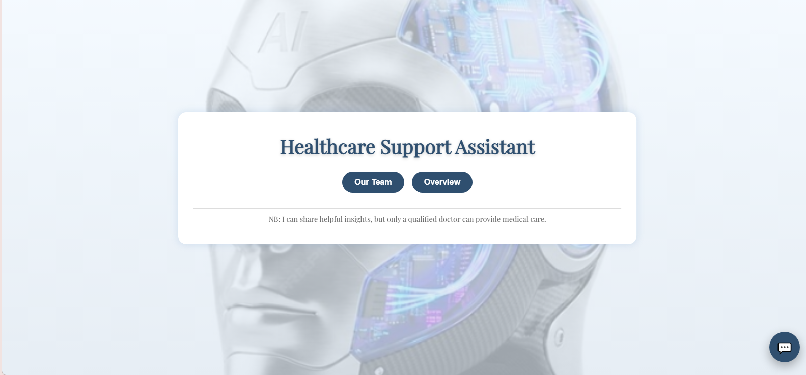
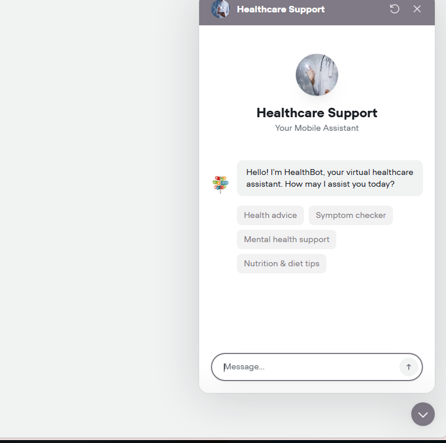
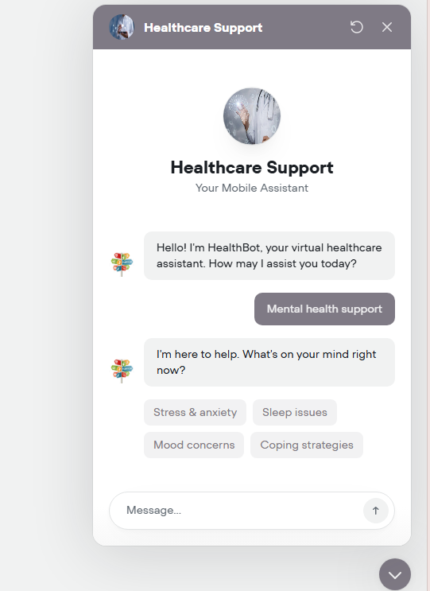

AI Healthcare Support Chatbot
This project presents the development of an AI-powered healthcare chatbot designed to assist users with healthcare-related services and general health guidance. The chatbot uses prompt engineering and conversational design principles to deliver clear, safe, and user-friendly responses.
Many individuals struggle to access quick and reliable healthcare information. Long queues, overcrowded facilities, and limited access to healthcare services create frustration and delays. The chatbot was built to provide immediate healthcare guidance in a simple and accessible way.


